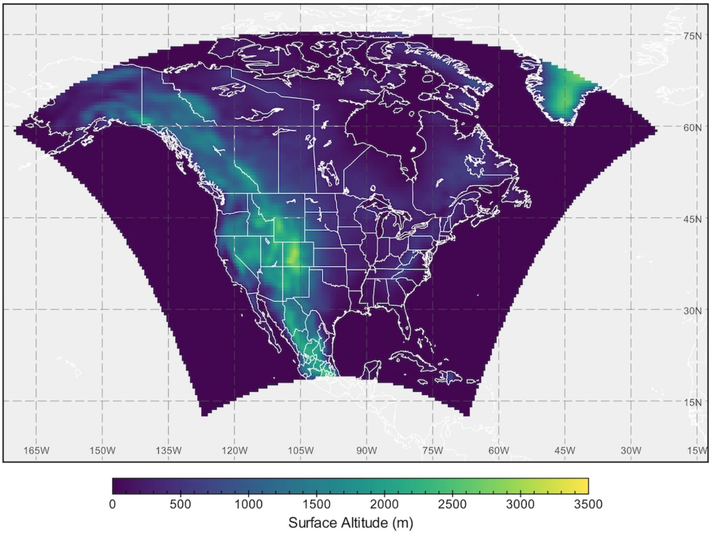

CanLEAD
Summary Description
CanLEADv1 is a dataset of single model initial-condition large ensembles (SMILEs). SMILEs are created by running the same experiment with the same model multiple times but using slightly different initial conditions (Maher et al. (2021))). CanLEADv1 consists of multiple bias-adjusted LEs. The most interesting among them for Electricity Sector applications is the Canadian Regional Climate Model Large Ensemble (CanRCM4 LE). This dataset contains 50 simulations at ∼50 km resolution produced with the Canadian Regional Climate Model Version 4 (CanRCM4; Scinocca et al. (2016)) forced at the lateral boundaries by the Canadian Earth System Model Version 2 (CanESM2; Arora2011). It combines historical forcings (1950–2005) with the forcings from the CMIP5 upper-bound RCP8.5 scenario (2006–2100). Eight surface variables were then bias adjusted using the multivariate method MBCn (Cannon (2018)) and two distinct reference datasets, resulting in 2 x 50 = 100 available simulations (15,100 simulated years). See the Expert Guidance for more information on large ensembles and the configuration of the 8 different flavors of CanLEADv1 SMILEs. A detailed description of the dataset is available in Cannon et al. (2022).

Dataset Characteristics
- Current version: v1
- Available variables: temperature, precipitation, wind, relative humidity, surface pressure, longwave and shortwave radiation (see variables section below)
- Temporal coverage: 1950-2100
- Temporal resolution: daily
- Spatial coverage: North America
- Spatial resolution: 0.5°
- Data type: Bias-adjusted climate projections
- Data format: netCDF
- Web references:
Government of Canada’s Open data portal - Reference:
Cannon et al. (2022) - Contact: Alex J. Cannon Climate Research Division, Victoria, BC
When to use CanLEADv1
- When you need large ensembles of climate projections
- When you want to quantify uncertainty arising from natural variability rather than model differences
- When you want to assess risk or robust statistics of extreme events using many realizations of the same model (e.g., return periods, tail risks)
- When you need probabilistic information (e.g., likelihood of exceeding thresholds)
- When you want to separate forced climate change signals from internal variability
- When you want to evaluate year-to-year and decade-to-decade variability in future climate due to the chaotic nature of the climate system itself.
- When you want to complement multi-model ensembles (e.g., CMIP6) with large initial-condition ensembles
Strengths and Limitations
Key Strengths of CanLEAD
| Strength | Description |
|---|---|
| Multiple variables | Eight climate variables are available. |
| Multiple members | 50 ensemble members allow to distinguish signal from noise. |
| Event attribution | The dataset can be used for event attribution studies, using the ALL and NAT forcings experiment. |
| Two references | Some of the uncertainty associated with the observational references can be sampled. |
| Effective for multivariate/compound indices | The dataset reproduces multivariate/compound indices (e.g., hot-dry days, precipitation-as-snow) more effectively than datasets using an univariate bias adjustment, which could improve analyses where multivariate dependence matters. |
Key Limitations of CanLEAD
| Limitation | Description |
|---|---|
| Lower resolution | The spatial resolution is lower compared to other bias-adjusted datasets. |
| Only two models | Only includes one RCM and one GCM, where the RCM is driven by the GCM. Model uncertainty is not sampled with this dataset. |
| Only one scenario | Only emission scenario RCP8.5 is available. Scenario uncertainty is not sampled with this dataset. |
| CMIP5 era | The dataset is based on CMIP5 data, which is not the most recent data available and uses different experiments than CMIP6. |
| Lack of reference datasets valuation | The reference datasets S14FD and EWEMBI have not been evaluated against other observational or reanalysis datasets for Canada which are documented in this guide. |
Expert Guidance
Variables available in CanLead
For details click on variable group to uncollapse
Data Access
The CanLEADv1 dataset can be downloaded from the Government of Canada’s Open Data Portal.